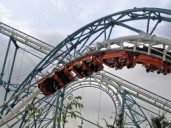
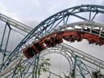
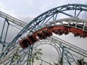

Выбор развлечений в парке огромен. Здесь каждый найдёт аттракцион себе по душе. Для любителей экстремальных развлечений здесь есть «Небоскрёб» высотой 43 метра, «Мельница», «7D-лифт» и кинотеатр «5D». Для тех, кто не прочь испытать свои силы всегда доступен скалодром и верёвочный городок. А прямо за ними располагаются аттракционы для тех, кто не боится бросить вызов законам физики — «Meltdawn» и «Vortex».
Множество аттракционов ждут и самых маленьких посетителей. А для тех, кто не любит кружиться на каруселях есть батутный городок и мини-вододром.
Жемчужиной парка считается недавно открывшееся колесо обозрения «Звезда Анхора», название которому выбрали с помощью голосования в соцсетях. Колесо считается самым высоким не только на территории Узбекистана, но и всей Средней Азии. Высота его составляет 72 м, а диаметр колеса 66 м.

Каток
Совсем недавно в парке Anhor Lokomotiv открылся каток Ice Rink. Для Ташкента это один из первых натуральных катков, который работает круглый год без выходных и праздников. 800 кв.м катка позволяют с размахом прокатиться не только любителям, но и профессионалам, а для тех, кто только начинает учиться езде на коньках есть туторы — дельфинчики, которые помогут новичку удержаться на ногах. Каток находится на крытой площадке, потому готов принимать гостей даже в самые жаркие летние дни.
Квесты и виртуальная реальность
В игровом центре «ENTER», расположенном на территории парка найдут для себя развлечения любители квестов в виртуальной реальности. На втором этаже центра расположены игровые автоматы, интерактивные игры. Здесь же и детский центр со множеством аттракционов. А для именинников, которые посещают парк в день своего рождения, администрация парка приготовила специальные призы.
Семь чудес Узбекистана
Аттракционы и карусели — это далеко не всё, чем парк удивляет своих посетителей. Создатели парка установили на территории парка макеты семи выдающихся архитектурных памятников Узбекистана. Здесь можно встретить телебашню Ташкента, копию столичного музея Темуридов, знаменитые в Хиве минарет Калта Минор и бухарский минарет Калян, самаркандское медресе Шердор, мемориальный комплекс Бабура в Андижане и символ Ташкента — куранты. А ещё здесь можно найти точную копию знаменитого скоростного электропоезда «Афросиаб», внутри которого находится кафе.
Другие развлечения
На территории парка расположен большой искусственный водоём, по которому можно покататься на катамаранах или лодках. А можно просто пройтись над водоёмом по пешеходному мосту. Вечером приятно посидеть около большого музыкального фонтана с разноцветной подсветкой. Кстати, высота фонтана может достигать 50 метров.
Множество кафе не даст посетителям оставаться голодными или мучиться от жажды в жаркое летнее время.
Летний театр на 320 мест зарекомендовал себя отличной площадкой для выступлений местных звёзд. Кроме него на территории парка устанавливаются и другие концертные площадки, на которые постоянно проходят тематические культурные мероприятия.
В парке Анхор Локомотив всегда что-то происходит. Здесь проводятся выставки собак, слёты байкеров, всевозможные мастер-классы для гостей любого возраста. Для многих исполнителей Узбекистана парк стал одной из любимых концертных площадок.
Не забывают в парке и о культурном наследии. Здесь проходят фестивали народных инструментов, с размахом отмечают национальные праздники.
Цены на аттракционы
Стоимость билета на Колесо обозрения: 15000 сум,VIP кабинка 25000 сум.
Детские карусели стоят от 5000 сум. Взрослые аттракционы от 15000 сум.
Цена на картинг начинаются от 60000 сум за заезд. У клуба есть три вида клубных карт, скидки по которым составляют 10, 20 и 30%.
 
